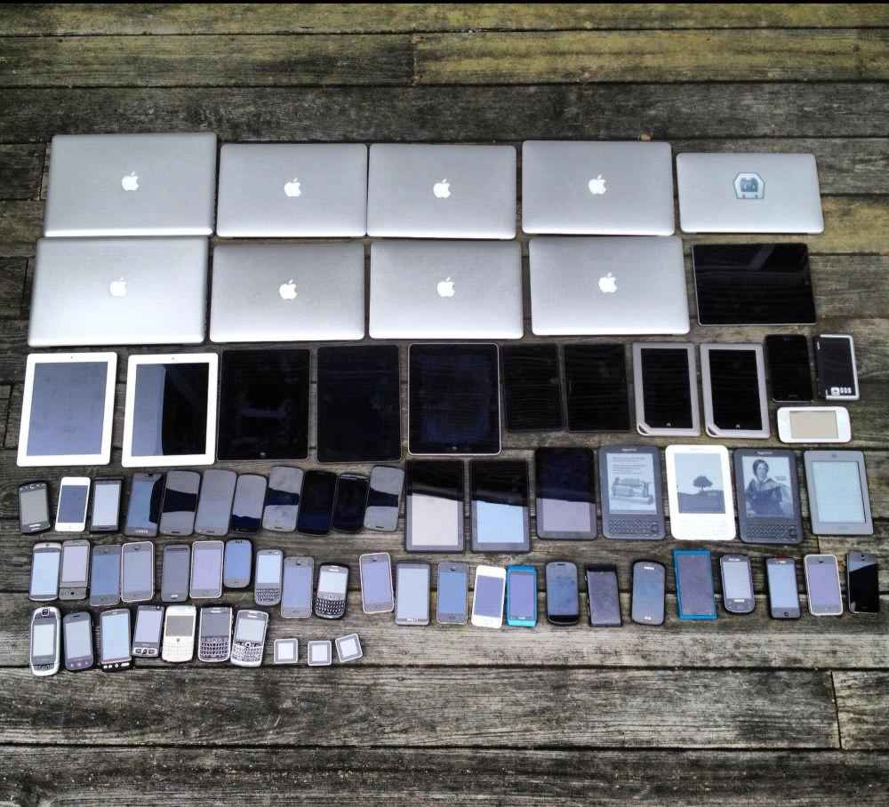

Datenvisualisierung
im Web
Mathias Schäfer9elements
Mathias Schäfer
- Studium der Germanistik und Philosophie
- Software-Entwickler bei 9elements
- Spezialist für Frontend-Webtechnologien
(HTML, CSS, JavaScript)
9elements
- Agentur für Software & Design
- Webseiten und mobile Apps
- Kundenarbeiten & eigene Produkte
- Sitz in Bochum
- Viele aktuelle und ehemalige
Studierende der TU Dortmund

Inhalte
- Praktischer Einblick in
die Datenvisualisierung im Web - Herausforderungen der Praxis
- Interactive Storytelling
- Technische Grundlagen
Was ist Datenvisualisierung?
- Das Ziel ist die Vermittlung nicht-visueller Daten.
- Visualisierung erzeugt in erster Linie ein Bild.
- Das Bild macht die Daten lesbar und verständlich.
Es vermittelt etwas über die Daten.
{kind=link}
{kind=link}
{kind=link}
{kind=link}
Datentypen
- Wirtschaftliche, finanzielle, politische Daten
- Empirisch-soziologische Daten
- Naturwissenschaftliche Daten
- Daten technischer Prozesse
- Geographische Daten
- Personenbezogene Daten:
Quantified Self
Konzeption einer Datenvisualisierung
- Fragestellung, Datenaufbereitung, Prototyping
(Irene Ros, 2015) - »Design is a Search Problem« (Mike Bostock, 2014)
- Visualisierung muss zu den Daten und zu der Aufgabe passen (Robert Kosara, 2015)
- Interpretation, keine Objektivität
Datenvisualisierung im Web
- Universeller Zugriff
- Webtechniken, Zugangsgeräte
- Interaktivität und Personalisierung
- Hypertext, soziale Medien
- Verlinken, Teilen, Einbetten, Speichern

Anpassungsfähige Visualisierungen
Interactive Storytelling
- Journalismus für das Web
- Technische Möglichkeiten nutzen
- Multimedia-Reportagen:
Text, Audio, Video, Karten, DataViz - In jeder Geschichte stecken Daten
Interactive Storytelling
- New York Times, The Guardian
- Tagesspiegel, Die Zeit, Spiegel Online
Storytelling
- Geordnete Sequenz von Schritten
(Robert Kosara, 2013) - Lineare oder nicht-lineare Erzählstrukturen
- Erzählen vs. Entdecken
- Computerspiele
Storytelling und Hypertext
- Das Web ist ein Hypertext-System
- »Lesen … wird zu einem Prozess der kreativen Interaktion zwischen Leser, Autor und Text.« (Mike Sandbothe, 1996)
Browser-Webtechniken (Frontend)
- HTML: Textauszeichnung
- CSS: Formatierung und Layout
- JavaScript: Datenverarbeitung, Interaktivität
- SVG, Canvas 2D, WebGL: Graphische Darstellung
Server-Webtechniken (Backend)
- SQL-Datenbanken: PostgreSQL, MySQL…
- Datenformate: JSON, XSL, XSL
- Programmierung: Ruby, Python, PHP, Java…
Umsetzung mit D3.js
- Etablierte JavaScript-Bibliothek
- Läuft im Browser, erzeugt Visualisierungen
- Daten laden und aufbereiten
- Mathematische, statistische Funktionen
- Graph-Layout, Geo-Projektionen
Data Binding mit D3.js
- Abbildung von Daten auf
graphische Elemente (z.B. SVG) - Liste von Datenpunkten →
Liste von SVG-Elementen rect,circle,line,pathusw.- Beispiel mit HTML (Code)